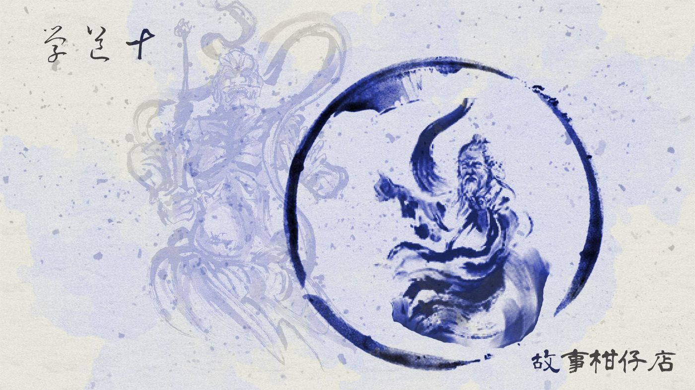
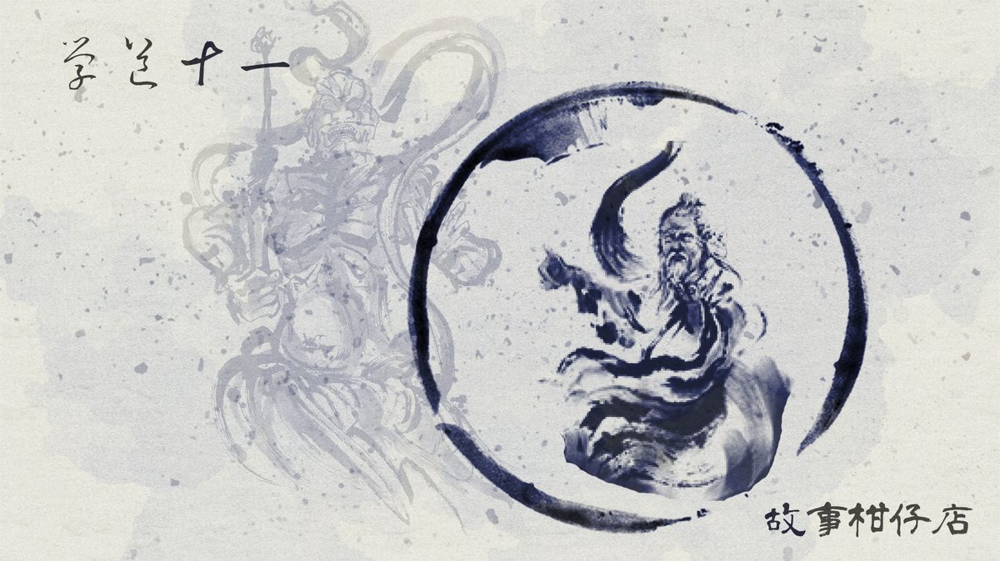

玄墨行者．學道（十一）

☯一章 學道（十一）成年禮☯
心跳聲原來能這麼急。如擂鼓，如馬奔。
無數次，拾兒想像過蒙叟及其房，如今他終於走了進來。
廂房比他想像還要簡陋，周遭是光禿禿的石壁，一張破了洞翻出棉絮的床墊擺在地上，蒙叟則坐在一邊的蒲團上。他比想像中還矮還瘦還老。
最引人注目的，是超過半人高的預天儀。包圍著青銅簍雕銅球的木環，一環刻著六十干支，一環則載八門八神，中央銅球則畫上了如勺的北斗七星。
「輪到你啦？」身形乾瘦、頂上稀疏的蒙叟嘿嘿笑了起來。他爛紅眼皮外翻，光明正大露出一對昏濁灰白眼珠。
沒有人碰，銅球自個震動起來，慢慢旋轉，朝左、朝右，摸不清方向。蒙叟豎耳傾聽儀器因震動而發出的細微聲響，左手劍指朝著右掌心不知比劃著什麼，忽然又怔住了。
「輕而易舉之事，你要弄得難如登天。」蒙叟語氣聽不出擔憂，反而有種興味。
「蛤？什麼意思啊？」拾兒反問。
蒙叟伸出細長而枯槁的食指，敲了敲拾兒腰間的羅盤，原本僵住不動的指針，竟開始靈巧轉動。
「入死，才能出生。往北下山去吧。」蒙叟丟下這句，便爬上床躺下，隨即發出鼾聲。
一頭霧水的拾兒，猶疑步出廂房，穿過七者眼光，出內堂，石門一開，虹月已等在外廳，迫不及待問：「怎麼樣呢？」
遲疑一秒，拾兒答：「說我骨骼精奇，是個練武奇才！別瞎操心，想買什麼？我收妖後得空給妳帶回來！」
收妖，才是成年禮的重頭戲。習了十多年功夫，有沒有那命格，就看今趟。
出孤峰，踏林中湖，穿樹叢。拾兒掏出剛獲的小羅盤，指針晃蕩，他歪頭想了會，腳步輕快往斷崖跑去，毫不遲疑，翻攀石壁，垂直往下。崖邊僅一人能通過的刀片岩，他一步一踏如履平地，老樹也是去路，他攀枝轉葉，很快來到一大片蒼茫草原。
山中無晨昏，來到此他才發現太陽隱沒，夜幕暈染。草是黃綠色的，乾燥蓬鬆如雲朵，被四周深廣如海的山包圍。
拾兒在此睡了一夜，在日出前醒來，瞧瞧羅盤，繼續前行。天地真大，也唯有天地，才容得下他雄心壯志。
從天傾洩的瀑布打得他渾身清涼，一身濕淋很快曬乾，他興奮側翻過橫跨溪谷的吊橋，來到一處熱氣蒸騰的溫泉街。溪畔是一整排莊園或民房，掛著「住宿」、「泡湯」、「山產」招牌，遊客三兩。
若是平常的他，肯定會在此走走玩玩。畢竟身為傳人，一年只能下山兩次，還得由師父帶著，學學怎麼買車票、掏錢買東西、哪間店很雷不要踩，根本不能玩個痛快。
可惜今日有要事在身，不宜散漫。他來到一大彎路口旁簡陋客運站，依循著師父當初教的，排隊、掏錢買票、搞清楚方向，再排隊上車。
下了車，他其實很難想像此處怎會有妖，但羅盤指示的確是這。
空氣中飄來不尋常的氣味。
拾兒循著氣味，沿著溪畔，在這清疏之地，竟見人群聚攏，莫非有妖物作祟？他伸長脖子一瞧，原來是一不起眼的肉圓店，掛著董字招牌。
難怪覺得不尋常，原來是肚餓，拍拍口袋中七師叔瑤光前日塞給他的一捲鈔票，他索性也排起隊來，一顆顆油泡肉圓淋滿帶甜醬汁，他吃得十分滿意，可惜虹月吃不到。接著，又學鄰桌，抄起水壺往碗內注大骨湯，和著醬汁喝盡。
吃飽喝足，他晃蕩溪畔，時不時得小心急速通過的自行車。看慣大山大谷，想不到這溪也是連綿遼闊的，一路蜿蜒不知要流往何處。山在很遠很遠的那頭了，自己的來時路顯得這麼長，十八年，等的不就是今天。
夕陽餘暉將溪水染金，偶然車輛經過的轟隆響，夾雜著規律的「哐、哐」聲。拾兒心裡一跳，豎耳傾聽，直覺聲音有異，掏出羅盤歪頭看了半晌。
「指著哪裡呀？！看不懂啦！」不等指針擺動停止，他便不耐地收起羅盤，一躍而起，乾脆逡巡小鎮，尋找聲響來源。
這裡的房子矮矮的，馬路大大的，車少少的，拾兒曾聽過師父形容大城市台北的模樣，擁擠、濕熱、大樓林立、五光十色。
正當他幻想著台北時，腳步突然停住了。
眼前平房屋簷下，有三個尖耳尖牙、頂上無毛的妖精，正往屋頂丟石頭，發出「哐！哐！哐！」聲響。每敲響一次屋頂，他們的臉便皺成酸梅似的笑得開懷。
那是一種愛惡作劇的妖精，拾兒笑了起來：「這種檔次啊？也太瞧不起人了。」
－－－－－
#新連載依舊兩天一篇每晚準時六點半喔
#請人客多多指教
#記得去各大書店買我們的書故事柑仔店哩

